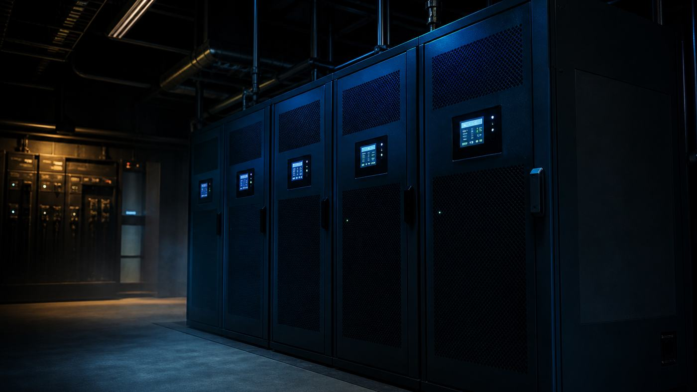

// Critical Power
UPS topologies and what N+1 really means
The four UPS topologies, the honest case for and against eco mode, and why module-level redundancy is not the same as a redundant system.

Every UPS answers the same question - what sits between the utility and the load, and what does it do when the utility misbehaves - and there are only four common answers. IEC 62040-3 classifies them by how much of the input the output depends on: VFD (voltage and frequency dependent), VI (voltage independent), and VFI (voltage and frequency independent). The standard actually uses a three-part code, so a good online unit is VFI-SS-11: input-independent, sinusoidal output in both modes, best dynamic performance class.
Standby and line-interactive
Standby. The load runs on utility through a relay. A battery charger keeps the battery topped up and an inverter sits idle. When the input fails, the relay throws and the inverter picks up the load in a handful of milliseconds. VFD class.
This is what is under a desk. It is cheap, it is efficient because there is almost nothing in the path, and its output is whatever the utility is doing right up until the moment it is not. Output waveform on battery is often a stepped approximation rather than a sinusoid. Nothing in a data hall should be on one.
Line-interactive. Same basic idea, with a tap-changing autotransformer or buck-boost stage added so the unit can correct voltage without going to battery. A sag that would send a standby unit to battery is instead corrected by changing a tap. VI class: output voltage is regulated, output frequency still follows the input.
The important benefit is battery life. Batteries fail from cycling and from heat, and a line-interactive unit stops cycling the battery for every brownout. Good for network closets, edge cabinets, small comms rooms. Frequency still passes through, so anything sensitive to frequency is unprotected.
Double conversion
Rectifier to a DC bus, DC bus to an inverter, always, with the battery sitting on the DC bus. The output is synthesized from scratch. Input voltage and frequency never touch the load, and there is no transfer when utility fails because nothing changes - the DC bus just starts drawing from the battery instead of the rectifier. VFI class.
That is the topology in essentially every data center. The cost is that you convert the power twice, all day, forever. Real efficiency is typically 94 to 97 percent depending on load point and vintage, and the losses come out as heat that then costs cooling energy to remove.
Two details people forget. First, a double conversion UPS is only frequency-independent while the inverter is running: on static bypass, the load is on raw utility. Second, the rectifier is a nonlinear load on whatever feeds it, which is a real problem when what feeds it is a generator.
Delta conversion
A less common online topology. Instead of converting all the power twice, a series converter rated at roughly 30 percent of output handles only the difference - the delta - between input and output, working alongside a full-rated shunt converter. Less power passes through a full conversion, so efficiency is higher, and the input current is drawn near-sinusoidally with good power factor.
It is patented, which is why you see it from a narrow set of suppliers rather than across the market. Worth understanding so you recognize it on a one-line, but it is not usually a choice you get to make independently of picking a vendor.
Eco mode, and the argument
Eco mode runs a double conversion UPS with the load on its static bypass, inverter idle but ready, and fires the inverter only when the input goes out of tolerance. The bypass path is typically 98 to 99 percent efficient against a base of 94 to 97 percent.
That sounds small until you put load behind it. Four points of efficiency on a 1 MW load is roughly 40 kW of loss removed, plus the cooling that loss no longer needs. Over a year that is real money, and it is why the question keeps coming back no matter how many times an engineering group says no.
The argument against is transfer time. The UPS has to detect a problem, decide, energize the inverter and actuate the switch, and published figures for that sequence land somewhere in the range of 1 to 16 milliseconds. Until it completes, the load is on raw utility. Most modern server power supplies ride through that easily; the things that do not are older gear, some network hardware, and anything with a marginal power supply already.
My real objection is different and it is not about milliseconds. In eco mode, the inverter is the component you are betting the site on, and it is idle almost all the time. You find out whether it works when you need it. Double conversion runs the inverter continuously, which means a failing inverter announces itself on a normal Tuesday rather than during a utility event.
The newer high-efficiency modes - vendors call them things like advanced eco or eConversion - are a genuinely different animal. The inverter stays active in parallel with the bypass path, doing harmonic and power factor correction, and the vendors claim the same IEC 62040-3 class 1 dynamic performance as double conversion at around 99 percent efficiency. If someone says "eco mode," find out which of these two things they mean before you argue.
Static bypass
Every online UPS has a static bypass: back-to-back SCRs, one pair per phase, in parallel with the inverter, capable of transferring the load to raw utility in under a quarter cycle - about 4 milliseconds at 60 Hz.
It exists for three reasons.
Overload. A UPS inverter is a current-limited device, typically able to deliver something like 125 to 150 percent of rating for a short time. It cannot deliver the tens of kiloamps needed to clear a downstream short circuit. When a branch breaker faults, the UPS dumps to bypass so the utility source can supply enough current to blow the breaker, then comes back. If it could not do that, one shorted power supply in one rack would take down the whole UPS output.
Internal fault. Inverter fails, load stays up.
Maintenance. Static bypass lets you take the inverter down.
Two things about it get overlooked. It only works if the bypass source is present and within tolerance and reasonably in sync with the inverter output - a UPS running on battery during a utility outage has no bypass, which is exactly when an overload is most likely. And the bypass SCRs themselves are a single point of failure in the load path, sitting there for fifteen years, rarely tested.
Static bypass is not maintenance bypass. Maintenance bypass is a manual wrap-around switch, internal or external, that lets you fully de-energize and isolate the UPS while the load runs. If a site does not have one, the UPS can never be worked on. Specify it, and specify it as a bypass-isolation arrangement if you can afford the space.
What N+1 actually means
N is the capacity required to carry the load. N+1 is that plus one more unit of whatever the granularity is. The entire argument is about what "unit" means.
Take a 1 MW load.
- Four 500 kW UPS in parallel: 2N. Any two can fail.
- Three 500 kW UPS in parallel: N+1 at the system level. One whole UPS can fail.
- One modular frame rated 1 MW containing six 250 kW power modules: N+2 at the module level, and N at the frame level.
That last one is where people fool themselves. Module redundancy protects you against a power module failing. It does not protect you against a fault on the common output bus, a failure in the shared controller, a bad firmware update applied to the frame, a shared static bypass, a shared battery string, or an operator opening the wrong breaker on the frame. Those are all single points of failure that the module count says nothing about.
The other trap is that N+1 stops being N+1 the moment you touch it. Pull a module for service and you are running N. If the plan is "we'll swap it during a maintenance window," then during that window the site has no UPS redundancy at all. Redundancy and concurrent maintainability are different properties. A system that is N+1 only when nothing is being maintained is really an N system with a spare parts strategy.
True system redundancy means two independent paths from the utility service all the way to the rack: separate switchgear sections, separate transfer switches, separate UPS, separate distribution, separate cords into a dual-corded server. Anything common to both paths is where the outage will come from.
The UPS is usually not the thing that fails
Uptime Institute's outage work consistently puts power at the top of the list of causes of significant outages, and UPS-related failures at the top of the power category. Read that carefully, though, because "UPS-related" is doing a lot of work. The chain is almost never a spontaneously exploding inverter. It is a battery string that had degraded past the point of carrying the load and nobody load-tested it. It is a static bypass that would not transfer. It is a maintenance procedure performed on the wrong cabinet.
Uptime's own numbers put human factors squarely in the frame: close to 40 percent of organizations report a major outage caused by human error in the past three years, and roughly 85 percent of those trace to staff not following procedures or to the procedures themselves being wrong.
Which means the money spent moving from N+1 to 2N buys you less than it looks like on the one-line if the operating practice does not change with it. Two things determine whether a UPS plant does its job: whether the batteries can actually deliver rated runtime, which only a discharge test under real load tells you, and whether the people who work on it have a correct, current, rehearsed procedure. The topology diagram is the easy part.